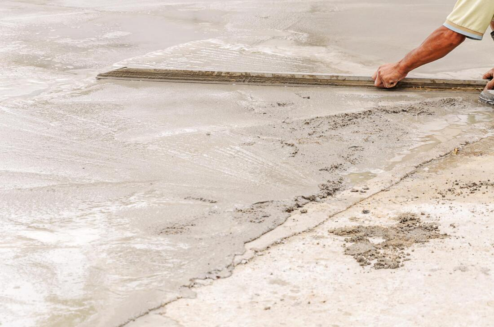
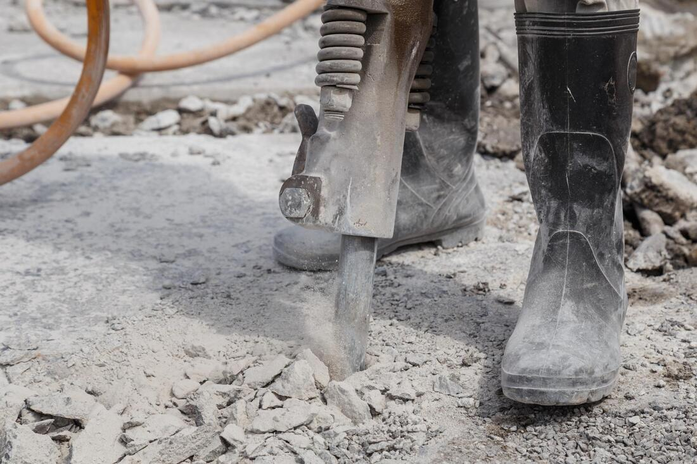

Stained Concrete
Stained Concrete Services in Youngstown, OH
At Youngstown Concrete Contractors, we offer stained concrete solutions for customers looking to improve the appearance of suitable concrete surfaces. Staining can transform plain gray concrete into a surface with distinctive colors and natural-looking variation.
Whether you're refreshing a patio, walkway, or decorative floor, we can help you explore the appropriate finishes and preparation requirements.
Get a free quote


Decorative Concrete Staining Options
Staining options depend on the condition and previous treatment of the concrete.
Acid-Stained Concrete
Acid stains react with components of the concrete to produce mottled, natural-looking color variations. Appearance varies from slab to slab.
Water-Based Concrete Stains
Water-based products can provide a wider range of colors and may offer more predictable results for particular design goals.
Outdoor Concrete Staining
Patios and walkways may be stained when structurally suitable. Proper surface preparation and products designed for exterior exposure are essential. Pair with patio or walkway projects when a new pour is needed.
Benefits of Stained Concrete
- Improves the appearance of plain concrete.
- Offers a range of decorative tones and finishes.
- May refresh existing sound slabs without replacement.
- Can complement traditional and modern designs.
- Allows patterns and natural color variation.
Can Existing Concrete Be Stained?
Often, yes. But prior sealers, oil, coatings, moisture, and repairs can prevent even staining. Staining doesn't fix structural cracks, settlement, or failing slabs. Inspect and prepare the surface before choosing a product. For patterned texture rather than color alone, see stamped concrete.
Maintaining Stained Concrete
Regular cleaning, suitable sealers, and care appropriate to the location can help preserve the finish. Exterior surfaces need extra attention to weather exposure and winter conditions.
Frequently Asked Questions
How much does concrete staining cost?
Price depends on surface size, preparation, stain selection, condition, and protective finish. An inspection clarifies what preparation is needed.
Can old concrete be stained?
Many older slabs can be stained after evaluating structural condition, coatings, and contamination. Not every existing surface is a good candidate.
Is stained concrete slippery?
Traction depends on concrete texture and protective coatings. Some areas need additional slip-resistant treatments.
How long does stained concrete last?
Results can last many years with appropriate installation and care, though exterior exposure may require refinishing. Sealer care affects how the color holds up.
Is stained concrete the same as stamped concrete?
No. Staining adds color; stamping creates a physical pattern or texture in fresh concrete.
Get a Free Stained Concrete Estimate
Contact Youngstown Concrete Contractors to discuss your surface and decorative options.